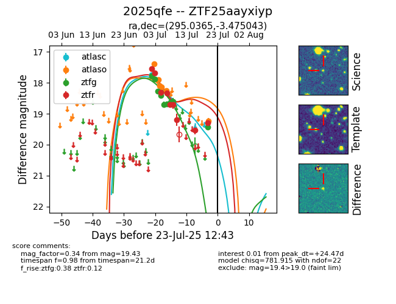

Target ZTF25aayxiyp at 2025-07-23 12:43, see:
FINK: fink-portal.org/ZTF25aayxiyp
Lasair: lasair-ztf.lsst.ac.uk/objects/ZTF25aayxiyp
ALeRCE: alerce.online/object/ZTF25aayxiyp
TNS: wis-tns.org/object/2025qfe
YSE: ziggy.ucolick.org/yse/transient_detail/2025qfe
alt names
ZTF25aayxiyp (ztf,fink)
2025qfe (tns,yse)
coordinates:
equatorial (ra, dec) = (295.0365,-3.47504)
galactic (l, b) = (35.4003,-12.41681)
photometry
last atlasc=17.74, atlaso=19.24, ztfg=19.43, ztfr=19.29
1 atlasc, 6 atlaso, 9 ztfg, 9 ztfr detections
